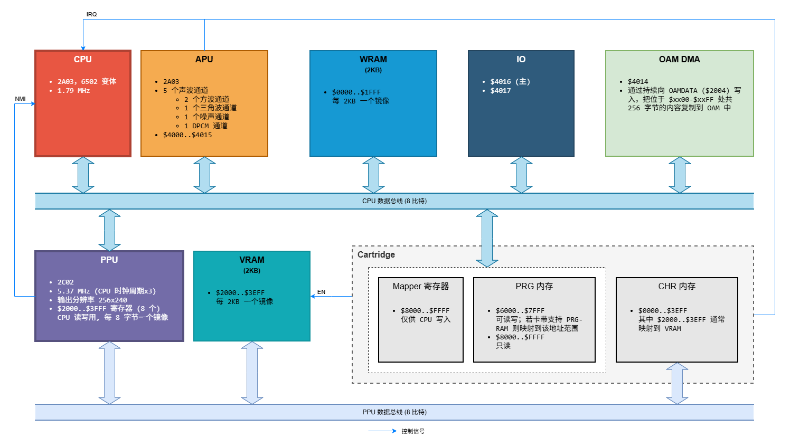
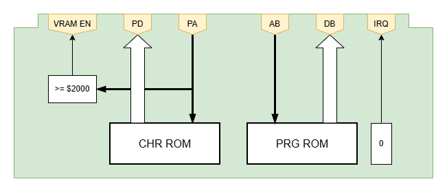
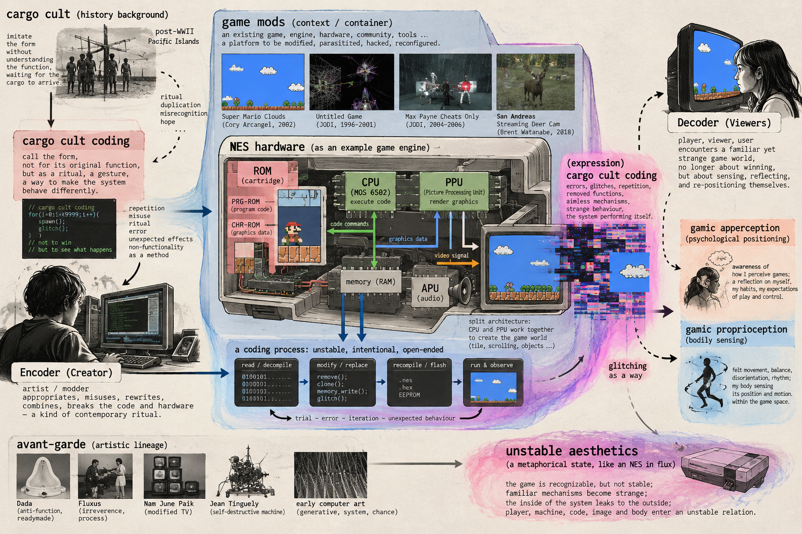

Reading material：Eddie Lohmeyer (2021), Unstable Aesthetics: Game Engines and the Strangeness of Modding. Bloomsbury Academic. （Chapter: The Mechanism of Art Modding and Er40r1: A Scroll Down Memory Lane）
"Art Modding", a new concept for me, makes conventional play become unfamiliar and players feel unstable and apprehensive. That's related to what author called, unstable aesthetics. Aimlessly playing, a kind of sensory encounter and driven by curiosity, seems to be more suitable for light players. A more avant-garde way to unveiling the algorithmic space through intentionally leading the gamic apperception (psychological positioning, a reflection on self) and gamic proprioception (physical/body reaction, the self situation connected to game space). Try to break the coherence in visually realistic digital world and also the conventional experience in playing, visually or narratively. Modding aesthetics may influence viewers' apperception for the virtual world. Next, a big relational graph for the core concepts includes the following keywords: cargo cult (history background), cargo cult coding, game mods, NES hardware (ROM, CPU, PPU), aimless and avant-garde... In a communication way: encoder(creator) - computer - (expression) cargo cult coding - in a container - (context) game mods - decoder (viewers). And the unstable aesthetics metaphor to NES hardware, a coding process, intentionally leading the gamic apperception (psychological positioning, a reflection on self) and gamic proprioception ... Glitching is a way.
"cargo cult coding serves as a way of appropriating special computational e%ects without abiding by the standard logic and protocols of a game system.9 !roughout the 1990s, these formal interventions undertaken at the level of the engine’s code, worked to shift the player’s experience away from reward, pleasure, and mastery within a perspectivally coherent gamespace toward aimlessness: interactions with the system that interrupt flow and the ability to aim, rechanneling goal-driven play toward sensory engagements with abstract forms."

CPU (core, process data) & CPU's peripherals
Cartridge: CHR-ROM (save graphic data) & PRG-ROM (save source code)Ask AI to draw a picture for the keywords

Related Art works:JODI — Untitled Game (1996–2001)
这是最直接的例子，因为 Bosma 所说的 cargo cult coding 本身就是在讨论 JODI 的实践。JODI 修改 Quake，但目的不是增加新的“正常玩法”，而是故意让原有逻辑崩开：空间消失、camera 旋转、数字不断流动、输入产生远超预期的视觉结果，有些版本里甚至像是程序自己成为 performer，而玩家失去 agency。Rhizome 当年的评论也特别指出，JODI 把 Quake 的 algorithm、interface 和 architecture 拆出来，让我们看见通常被游戏世界遮住的 system。Rhizome Archive
这和 avant-garde 很接近：不是用代码完成一个功能，而是把功能本身拆掉、展示、异化。
Rhizome Archive – Untitled Game review
Youtube video: https://www.youtube.com/live/w7XlPSQ7-yk?si=no9F-xBJhYamzy03
JODI — Max Payne Cheats Only (2004–2006)
这个可能比 Untitled Game 更容易直观理解。JODI 把 Max Payne 原来作为辅助玩家的 cheats 抽出来，然后让这些异常动作成为作品主体：角色重复荒谬动作、身体半透明、perspective 变形、正常的 realistic game space 被破坏。换言之，他们保留了游戏机制的“咒语”，却去掉了这个咒语原本服务的目的。Rhizome/EAI 当时把它描述为对 game program structure 的 intervention。Rhizome Archive
从 cargo cult coding 的角度，它特别像：知道一个命令会产生某种效果，于是反复调用这个效果，却不再关心它原先为什么存在。
Rhizome – JODI: Max Payne Cheats Only
Cory Arcangel — Super Mario Clouds (2002)
它不是 Bosma 意义上最严格的 cargo cult coding，但和这个逻辑非常接近。Arcangel 修改 NES cartridge，把 Mario、敌人、平台、sound 等几乎全部拿掉，只留下不断 scrolling 的蓝天与白云。游戏里的 scrolling 原本用于 player navigation，现在仍然“运行”，但它已经失去了原来的 gameplay function，变成一种 autonomous animation。Whitney 也把这个作品描述为对 Super Mario Bros. code 的 hacking，并强调它最终成为一个 non-interactive scrolling image。Whitney Museum of American Art
它很像一种更安静的 cargo cult coding：保留 machine gesture，但取消 gesture 的目的。
Whitney Museum – Super Mario Clouds